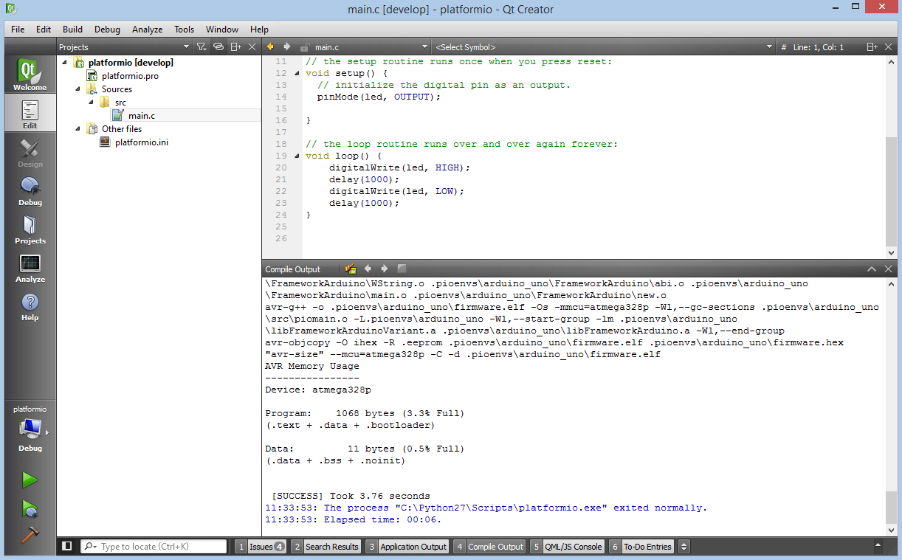

Qt Creator¶
The Qt Creator is an open source cross-platform integrated development environment. The editor includes such features as syntax highlighting for various languages, project manager, integrated version control systems, rapid code navigation tools and code autocompletion.
Refer to the Qt-creator Manual page for more detailed information.
Contents
Integration¶
Integration process consists of these steps:
Open system Terminal and install PIO Core (CLI)
Create new folder for your project and change directory (
cd) to itGenerate a project using PIO Core Project Generator (
pio project init --ide)Import project in IDE.
Project Generator¶
The generator will create a [Qt Creator generic project](https://doc.qt.io/qtcreator/creator-project-generic.html).
Choose board ID using pio boards or Embedded Boards Explorer
command and generate project via pio project init --ide command:
pio project init --ide qtcreator --board <ID>
# For example, generate project for Arduino UNO
pio project init --ide qtcreator --board uno
Then:
Import project via
File > Open File or Projectand selectplatformio.creatorfrom the folder where is located “platformio.ini” (Project Configuration File)Switch to
Editmode (left panel) and open source file fromsrcdirectory (*.c, *.cpp, *.ino, etc.)Build project:
Menu: Build > Build All.
Warning
The libraries which are added, installed or used in the project after generating process won’t be reflected in IDE. To fix it you need to reinitialize project using pio project init (repeat it).

{kind=link}